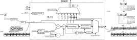

scaler (scaler.vhd): Scaler
Schematic


Overview
Scales the complex bin values at the output of the FFT module into (4+4) bits complex values by applying a real or complex gain for each frequency bin and truncate or round the value to the desired bit width. SCALER main output can stream the scaled inputs, the direct inputs (bypass), or special overflow flags. The capture output can independently stream the inputs in various higher-resolution formats. SCALER also offers an internal scaler overflow statistics module.
Entity documentation
-
ENTITY scaler
Scales FFT output bins by applying gains and truncating/rounding to the desired bit width with overflow detection and saturation.
GENERICS |
|
FFT_BITS_PER_BIN: |
integer := 32+32 –18+18; – Real + Imaginary part
|
FFT_BINS_PER_WORD: |
integer := 4 |
FFT_BINS_PER_FRAME: |
integer:= 8192 |
FFT_BITS_PER_WORD: |
integer := FFT_BITS_PER_BIN * FFT_BINS_PER_WORD |
USE_COMPLEX_GAINS: |
boolean := FALSE |
COEFF_BITS_PER_BIN: |
integer := 16 – typically 16 or 16+16. Includes both real and imaginary part. If USE_COMPLEX_GAINS=TRUE, half the bits are used for real and half for imaginary. Must be multiple of 8 as it is configured byte-wise.
|
OUT_BITS_PER_BIN: |
integer := 8+8 – Fixed to (8+8) to support 8-bit mode or get more of the input data in bypass mode.
|
CAP_BITS_PER_WORD: |
integer := 128 – 32 for Iceboard, 128 for CRS
|
FFT_TUSER_BITS_PER_WORD: |
integer := 2 – number of tuser bits coming from FFT (fft overflow, adc overflow)
|
SCALER_TUSER_BITS_PER_WORD: |
integer := FFT_BINS_PER_WORD + FFT_TUSER_BITS_PER_WORD + 1 – add overflow bits (one per bin) and current gain bank
|
OUT_BITS_PER_WORD: |
integer := OUT_BITS_PER_BIN * FFT_BINS_PER_WORD |
CAP_BITS_PER_BIN: |
integer := CAP_BITS_PER_WORD / FFT_BINS_PER_WORD – minimum is 4+4, but can be increased to use 8-bit mode or get more of the input data in bypass mode for capture purposes.
|
EIGHT_BIT_SUPPORT: |
boolean := OUT_BITS_PER_BIN >= 8+8 – TRUE of the scaler supports (8+8) bit output in addition to the 4+4 bit output
|
PORTS |
|
| – Input Interface (Non Blocking AXI-Streaming, synchronous to ``clk``) | |
s_axis_in_tdata: |
in std_logic_vector(FFT_BITS_PER_WORD-1 downto 0) – Format: MSB->LSB: Re(N), Im(N), Re(N+1), Im(N+1)
|
s_axis_in_tvalid: |
in std_logic |
s_axis_in_tlast: |
in std_logic |
s_axis_in_tuser: |
in std_logic_vector(FFT_TUSER_BITS_PER_WORD-1 downto 0) – Bit 0: ADC overflow, Bit 1: FFT Overflow; Valid on TLAST only.
|
| – Main output interface (non-blocking AXI-Streaming, synchronous to ``clk``) | |
m_axis_out_tdata: |
out std_logic_vector(OUT_BITS_PER_WORD-1 downto 0) – Format: MSB->LSB: Re(N), Im(N), Re(N+1), Im(N+1)
|
m_axis_out_tvalid: |
out std_logic |
m_axis_out_tlast: |
out std_logic |
m_axis_out_tuser: |
out std_logic_vector(SCALER_TUSER_BITS_PER_WORD-1 downto 0) – Bit 0: ADC overflow, Bit 1: FFT Overflow; Bit 2+ Scaler overflow for bin 0,1,2…, last bit: gain bank. Valid on TLAST only
|
| – Capture output interface (non-blocking AXI-Streaming, synchronous to ``clk``) | |
m_axis_cap_tdata: |
out std_logic_vector(CAP_BITS_PER_WORD-1 downto 0) – Format: MSB->LSB: Re(N), Im(N), Re(N+1), Im(N+1)
|
m_axis_cap_tvalid: |
out std_logic |
m_axis_cap_tlast: |
out std_logic |
m_axis_cap_tuser: |
out std_logic_vector(SCALER_TUSER_BITS_PER_WORD-1 downto 0) – same contents as m_axis_out_tuser
|
| – Common Clock and Reset | |
clk: |
in std_logic |
reset: |
in std_logic – clk-synchronous reset
|
| – Channelizer monitoring (synchronous to ``mon_clk``) | |
fifo_overflow: |
in std_logic:= '0' – Used to monitor the channelizer FIFO since it does not haveits own BSB registers.
|
mon_clk: |
in std_logic := '0' |
mon_tvalid: |
in std_logic:= '0' |
mon_tlast: |
in std_logic:= '0' |
mon_word: |
in std_logic_vector(15 downto 0) := (others => '0') |
mon_ctrl: |
out std_logic |
| – BSB Interface | |
s_axis_bsb_tdata: |
in std_logic_vector(7 downto 0) |
s_axis_bsb_tvalid: |
in std_logic |
s_axis_bsb_tlast: |
in std_logic |
s_axis_bsb_tready: |
out std_logic |
m_axis_bsb_tdata: |
out std_logic_vector(7 downto 0) |
m_axis_bsb_tvalid: |
out std_logic |
m_axis_bsb_tlast: |
out std_logic |
m_axis_bsb_tready: |
in std_logic |
bsb_clk: |
in std_logic |
bsb_rst: |
in std_logic |
Implementation details
Principle of operations
The scaler processes FFT output data through a pipelined sequence:
Word counter: A word counter counts the incoming words, ressetting to zero at the start of each frame.
Gain table readout: The word counter is used as an address to extract the gain coefficients for the bins in the current word from the gain tables.
Gain application: Each complex bin in the input word is multiplied by its corresponding real or complex gain coefficient from the gain table using a pipelined multiplier.
Post-gain shift: After multiplication, a configurable left shift (0-31 bits) is applied to all results for global scaling. There is one shift register per gain bank (post_scaler_left_shift_bank0 / post_scaler_left_shift_bank1). The datapath uses the register of the active bank, delayed by the gain-table RAM latency so it arrives at the multiplier with the coefficients from that bank. For floating-point gains, an additional per-bin shift is added. Overflow is detected during this shift operation.
Rounding: The shifted values are rounded before truncation to the output bit width. Three rounding modes are supported: truncation (no rounding), normal rounding (ties round up), and convergent rounding (ties round to even to avoid bias). Overflows caused by rounding are detected.
Saturation: When overflow is detected, values are saturated to the maximum representable value.
Output: The final output is packed into the main output word and is sent on the output port.
Parameters
FFT_BITS_PER_BIN: Bits per frequency bin (sum of real + imaginary bits). E.g. 36 (18+18) bits for CHIME FFT, 64 (32+32) bits for the CHORD FFTFFT_BINS_PER_WORD: Number of frequency bins per word. E.g. 2 for CHIME FFT, 4 for CHORD FFT.FFT_BINS_PER_FRAME: Total number of frequency bins per frame. E.g. 1024 bins for CHIME FFT, 8192 bins for CHORD FFT.USE_COMPLEX_GAINS: When TRUE, uses complex gains, otherwise uses real gainsCOEFF_BITS_PER_BIN: Bits per gain coefficient, typically 16 for real gains or 32 (16+16) for complex gains. Must be multiple of 8 bits.OUT_BITS_PER_BIN: Output bits per bin for the main output. Needs to be at least 8 for holding the (4+4 bits) outputs, or 16 (8+8) bits if 8-bit mode is to be supported (EIGHT_BIT_SUPPORTis TRUE). In bypass modes, The input data will be truncated to this widthCAP_BITS_PER_WORD: Total width of the capture output port. The capture output word holds various number of values depending on the software-selected capture output format. Typically 32 bits for Iceboard (to feedPROBER), or 128 bits for CRS (to feedUCAP)EIGHT_BIT_SUPPORT: TRUE when scaler supports 8+8 bit output in addition to 4+4 bit output
Other generics are derived from the above parameters and are not generally user-configurable.
Interface
Input AXI4-Streaming interface (
s_axis_in_*): Non-blocking AXI4-Streaming interface synchronous toclk. Receives FFT output data.TDATA:
FFT_BITS_PER_WORDbits total. Typically containsFFT_BINS_PER_WORDcomplex frequency bins per word. Format from MSB to LSB: Re(N), Im(N), Re(N+1), Im(N+1), … Each component is signed (2’s complement format).TUSER:
FFT_TUSER_BITS_PER_WORDbits (typically 2). Frame-wide ADC and FFT flags, valid on TLAST only.Bit 0: ADC overflow flag
Bit 1: FFT overflow flag.
TVALID/TLAST: Standard AXI4-Streaming protocol.
Main output AXI4-Streaming interface (
m_axis_out_*): Non-blocking AXI4-Streaming interface synchronous toclk. Sends scaled data to correlator or corner-turn engine.TDATA:
OUT_BITS_PER_WORDbits total. See Output Formats section for details on the format.TUSER:
SCALER_TUSER_BITS_PER_WORDbits.Bit 0: ADC overflow flag. Valid on TLAST only.
Bit 1: FFT overflow flag. Valid on TLAST only.
Bits 2 to (2+``FFT_BINS_PER_WORD``-1): Scaler overflow flags (one per bin). Valid throughout frame.
Last bit: current gain bank. Valid on TLAST only.
Capture output AXI4-Streaming interface (
m_axis_cap_*): Non-blocking AXI4-Streaming interface synchronous toclk. Sends user-selected data.TDATA:
CAP_BITS_PER_WORDbits total. See Output Formats section for details on the format.Contents of TUSER: Same as main output TUSER.
tvalid/tlast: Standard AXI4-Streaming protocol.
BSB control bus (
CTRL_CMD_IN_*,CTRL_RPLY_OUT_*): Allows access to the module’s control and status registers, and gain table RAM space. Synchronous toctrl_clk.Channel FIFO monitoring interface (
fifo_overflow,mon_clk,mon_tvalid,mon_tlast,mon_word,mon_ctrl): Optional control and monitoring interface, typically used for debugging. Used to monitor and control the channel FIFO.
Clocking
clk: Main clock for all data interfaces (input, main output, capture output). All AXI interfaces are synchronous to this clock.ctrl_clk: Control clock for BSB control bus interface.mon_clk: Monitoring clock for channel FIFO monitoring interface (optional, defaults to ‘0’).
There is no CDC between clk and ctrl_clk domains and timing between these clocks is ignored as most of the control registers are quasi-static and changes are self-recovered or are expected to be followed by a pipeline reset. Exceptions are between the registers and the statistics module, where explicit CDC registers is used to ensure proper statistics readout.
Resets
reset: Reset synchronous toclk. Resets all internal state, counters, and pipeline stages.CTRL_RST: Synchronous reset (synchronous toctrl_clk). Resets the interface and the control registers to their default values.
Gain table
SCALER uses a gain table to store the gains to be applied to each bin. Two independnt gain tables, named bank 0 and 1, are stored to allow seamless gain switching (see Gain switching section below). The table is implemented as a block RAM instantiated using an XPM macro for inter-platform compatibility.
Each output word of the gain memory contains FFT_BINS_PER_WORD gain coefficients, each of which is COEFF_BITS_PER_BIN bits wide. The gain can be either a real or a complex value. If it is a real gain, it can be a scalar or a floating point value.
The gain table is accessed using the byte-wise BSB interface. Since the address-space of the BSB bus is not sufficient to address the whole gain table, a software-controller page address register gain_table_page is used to select which page is read and written.
Gain coefficients are stored in little-endian byte order. A typical 16 bits value is stored as two bytes, the least significant byte (LSB) is stored at the lower byte address, followed by the most significant byte (MSB) at the next higher byte address. Words are written in bin order (first word for bin 0, second word for bin 1, etc.). Note that writing the data this way makes the integers appear in the reverse word order (gain for bin 0 in the lower bits of the gain word, not the upper bits as one would expect), so the logic inverts the coefficient positions.
A few points:
Real and Complex gains are exclusive and are selected at compile time
Real gains are unsigned. Complex gains are signed.
Integer vs floating point gains are software selectable
Floating point gains are supported only for real gains
Complex gain format
If the USE_COMPLEX_GAINS generic is TRUE, the gain is a complex value, represented as two signed integers. The use_float_gains register is ignored.
For complex gains, the first 16-bit integer contain the Imaginary part of bin 0 and the second word (bytes at address 2 and 3) contains the Real part of the same bin. Then we proceed for bin 1, etc.
The complex gain is fed to the complex multiplier along withthe compled value from the FFT. The product is then left-shifted by the active bank’s left-shift register (delayed to match CMUL latency) before being further processed by the rounding and saturation logic.
Real integer gain format
If the USE_COMPLEX_GAINS generics is FALSE and use_float_gains register is FALSE, the SCALER will interpret the gains as a unsigned integer to maximize the dynamic range of the gain.
For real gains, the first integer stored in memory contains the coefficient for bin 0, the second integer contains the coefficient for bin 1, etc.
Each real and imaginary part of the corresponding input value will be multiplied by this value, and the active bank’s left-shift register will be applied to the result.
Real Floating point gain format
If the USE_COMPLEX_GAINS generics is FALSE and use_float_gains register is TRUE, the SCALER will interpret the gains as a floating point gain.
Floating point gains encode both a log and linear gain for each bin, allowing for far greater dynamic range at the cost of some precision. Their value is encoded as follows:
Bits 15:11: 5 bit log gain (unsigned exponent).
Bits 10:0: 11 bit linear unsigned gain (mantissa)
A real-multiplier multiplied both Re an dIm component of each bin withthe linear gain, and the sum of the per-bin log gain and the active bank’s left-shift register are used to left-shift the product
Note that both the linear and log parts are unsigned to maximize the resolution/range of the gain.
The format ressembles the half-precision floating point format defined by IEEE 754, but is simplified for ease of implementation. The differences are:
There is no sign bit.
We cannot express negative exponent or mantissa. There is therefore no offset encoding.
We don’t assume that the mantissa is prefixed by ‘1’. The IEEE standard does this to gain one additional bit of dynamic range, at the expense of having to treat zero as a special case. That is a nice trick though.
Gain switching
The scaler supports two independent gain banks (bank 0 and bank 1) that can be stored simultaneously in memory. The inactive bank can be programmed while the active bank is being used, and then the banks can be swapped, allowing for seamless gain switching. The scaler can switch between these banks using either asynchronous or synchronous switching modes.
Each bank has its own post-scaler left-shift register (post_scaler_left_shift_bank0 at control byte 0 bits 4:0, post_scaler_left_shift_bank1 at control byte 13 bits 4:0). Writing the inactive bank’s shift does not change the live datapath. When current_gain_bank switches, the corresponding shift is selected after the same RAM latency as the coefficient readout so the new gains and new shift arrive at the multiplier together.
Asynchronous switching: When the synchronize_gain_bank_switch register is set to ‘0’, the gain bank switches immediately at the next frame boundary (when TLAST is detected) after the next_gain_bank register is written.
Synchronous switching: When the synchronize_gain_bank_switch register is set to ‘1’, the gain bank switches only when the internal frame counter matches the gain_bank_switch_frame_number register value. This ensures that all scalers across multiple channelizers (and potentially across multiple boards) switch gain banks on the exact same frame number. The user must keep track of the gain tables and the frame number at which the table was applied in order to revert the gains downstream in the processing pipeline.
The current gain bank in use is indicated in the TUSER field of the output data of the SCALER(valid on TLAST only), allowing downstream processing to track which gain bank was applied to each frame.
Output formats
The scaler has two outputs: the main output and the capture output. The main output typically feeds the corner-turn engine (and its downstream correlator) and the capture output typically feeds the capture engine (PROBER or UCAP modules) for slow data monitoring.
Each of these outputs are configurable seperately, which allows for the monitoring of the data to be changed synamically without affecting the data sent to the CT engine.
Main output data type
The main output data type is selected by contanenating the bypass register (1 bit) and bypass_data_type register (2 bits). The following table summarizes the resulting outputs:
“0XX”: the main output produces its normal value, e.g. the 4+4 bit or 8+8-bit scaled FFT data. The output word is divided in
FFT_BINS_PER_WORDcomplex values, and the bin values are placed in the output word in the same order as the input word, with the dame Re/Im component ordering. In their destination:
Re and Im components are left aligned to the MSB of their fields(0 padded on the LSBs if needed)
Values are in 2’s complement or offset binary encoding, depending on register setting.
“100”: The input FFT data is forwarded directly to the output. The input and output words are divided in
2*FFT_BINS_PER_WORDinteger values, and each integer from the input is placed in the corresponding position in the output. MSB of the input is aligned with MSB on the output. Excess LSBs from the input are truncated. Scaler settings such as offset encoding, symmetric saturation or 4-bit encoding are ignored. This mode is typically used for injecting test patterns in the CT engine by using the FUNCGEN while bypassing the FFT.“101”: Divides the output word in
FFT_BINS_PER_WORDcomplex values, and sends the 4+4-bit value 1+0j if an over- or underflow occurs in either the real or imaginary component of each bin, otherwise, 0+0j is output. The 4-bit values are left-aligned to the MSB of each field. If this data is send to a 4+4-bit correlator, the correlator will count how many overflows happened in each bin.“110”: Divides the output word in
FFT_BINS_PER_WORDcomplex values, and sends the 4+4-bit value 1+0j if a positive overflow occurs in the real component of the bin, 0+1j if a negative underflow occurs in that component, otherwise, 0+0j is output. The 4-bit values are left-aligned to the MSB of each field. If the data is sent to a 4+4-bit correlator, the correlator will add 1 to a bin on a positive overflow and subtract 1 on a negative overflow. This can be used to confirm that overflows are symmetrical.“111”: Is similar to “110”, but for the imaginary component of the bin.
The latter three modes essentially turn the correlator into a real-time statistics engine that can be used to validate the gain settings and the signal dynamics.
Capture data type
The cap_data_type register (3 bits) determines what is output on the scaler’s capture output.
“000”: Main data mode. Forward the main output directly to the capture output. Both main and capture outputs are seen as
2*FFT_BINS_PER_WORDsigned integer values, and each main output integer is copied directly to the corresponding capture output integer. Values are MSB aligned and zero-padded on the remaining LSBs. This mode can be used to monitor what the correlator sees and validate that the scaler and output selection logic operates correctly in testbenches.“001”: Raw FFT mode. The MSBs of
2*FFT_BINS_PER_WORDintegers from the input are passed to the corresponding integers in the output, in the same order. Inputs integers are truncated to fit the output integers. No other transformation is made. This mode allows the capture of all the bins in a single frame, but with limited dynamic range. Small input signals might not be visible due to the truncation. For example:
CHIME: input is 2x (18+18 bits), capture word is 32 bits, so captured output is 2 x (8+8) bits. Lower 10 bits of the input are discarded.
CHORD: input is 4x (32+32 bits), capture word is 128 bits, so captured output is 4 x (16+16) bits. Lower 16 bits of the input are discarded.
“010”: Post-gain FFT mode. The MSBs of
2*FFT_BINS_PER_WORDRe and Im integers obtained after applying the gains (but before being rounded or truncated to 4 or 8 bits) are passed to the corresponding integers of the capture output, in the same order. The post-gain integers are truncated to fit the output integers. Non-symmetric Saturation is applied if the gains cause the integer to exceed the product integer range.No other transformation is made. This mode allows the capture of smaller FFT signals and can be used to validate the gain stage. This mode offers the same dynamic range as the Raw FFT mode.“011”: 4+4-bit mode. Sends the 4+4 bit (or 8+8 bit) fully processed and transformed scaler value to the MSBs of the capture word integers, with zero padding on the LSBs. This mode is identical to the main data mode if the main output is set to send 4+4-bit data. This mode can be used to capture scaled data if the main output is used to send overflow-counting patterns.
“100”: “FFT 2x” mode, a.k.a. Double resolution mode. Output word contains only half the bins but with twice the dynamic range. Even frames contain the even bins, odd frames contain the odd bins. In this mode the MSBs of the
FFT_BINS_PER_WORDRe and Im integers of the even or odd bins are copied to theFFT_BINS_PER_WORDintegers in the output word. Nte that the odd and even bins are taken from different input frames, This mode is typically used for capturing full resolution pre-gain FFT data in order to compute the required gains. This mode allows:
CHIME: input is 2x (18+18 bits), capture word is 32 bits, captured output is 1 x (16+16) bits. Lower 2 bits of the input are discarded.
CHORD: input is 4x (32+32 bits), capture word is 128 bits, captured output is 4 x (32+32) bits. No data is discarded.
“101”: Full resolution mode. The Re and Im component each fully fill an entire capture word. Re and Im words are sent as two consecutive words. Multiple frames are required to send all the bins. The number of frames required is
2*FFT_BINS_PER_WORD. This mode allows full dynamic range capture of the FFT data for platforms with narrow capture words. For example:
HIRAX: input is 2x (29+29 bits), capture word is 32 bits, captured output from two consecutive words is (32+32) bits, with all bins sent using 4 frames. This mode allows full bitgrowth FFT data capture even with a 32-bit capture word.
CHORD: input is 4x (32+32 bits), capture word is 128 bits, captured output from two words is (128+128) bits, is 4 x (32+32) bits, with all bins sent using 8 frames. This mode is overkill for this configuration.
“110”: saturation flags. Output is divided into
FFT_BINS_PER_WORDcomplex numbers which represent the saturation flags for both the Re and Im component of each bin. A real value of +1 or -1 represents a positive or negative saturation on the real part, while an imaginary 1j or -1j represents a positive or negative saturations on the imaginary part. In all cases, a value of 0 represents no saturation in the respective component. This mode is typically used to monitor the saturation of the scaler output and roughly analyze its distribution over time, although fully real-time capture of those flags is not possible with the downstream capture engine. the gain stage.“111”: Not used.
In all these modes, the complex values are placed in the capture output word in the same order as the input word, with the same Re/Im component ordering.
Rounding modes
- The scaler rounds the scaled FFT data before it truncates it to the 4+4 bits that it outputs. The rounding mode determines how this is performed
truncation: no rounding is performed. The LSBs are simply truncated off the end.
normal rounding: the 4 MSBs are rounded either up or down depending on the value of the remaining bits. On a tie, they are rounded up.
convergent rounding: As above, except that on a tie, the data is rounded towards the even number to avoid introducing bias.
Symmetric saturation
Due to the way the two’s complement representation of signed integers works, the maximum and minimum values representable by N bits are 2^(N-1) - 1 and -2^(N-1), respectively. This means that on a 4-bit positive overflow, the scaler output 7, but on a negative underflow, it outputs -8, which can introduce a statistical bias. To correct for this, when symmetric saturation is enabled, negative overflows saturate to -7 instead in 4-bit mode or -15 instead in 8-bit mode.
Symmetric saturation is enabled by setting the symmetric_saturation register to ‘1’.
Zero on saturation
When zero on saturation is enabled, if either the real or imaginary components of a frequency bin over- or underflow, then both components are zero’d so that they do not impact correlation.
Offset encoding
When offset encoding is enabled, the output data is represented via an offset encoding instead of the two’s complement. Practically speaking, this amounts to inverting the sign bit.
Overflow statistics module
The scaler is equipped with counters that can be used to count the number of overflows that occur over a user-specified number of frames. The scaler counts the number of adc overflows that occur in that period, in number of frames, as well as the number of scaler overflows that occur, in number of bins (i.e. the real and imaginary components are counted together).
Memory Map
Page |
Addr |
Bit(s) |
Name |
Description |
|---|---|---|---|---|
CONTROL |
0 |
7 |
soft_reset |
Soft reset signal. When ‘1’, resets internal counters and state. |
6 |
bypass_scaler |
When ‘1’, bypasses the scaling operations and passes input data directly to output (with optional transformations based on bypass_data_type). |
||
5 |
four_bits |
Is ‘1’ when only the top 4 bits are of interest (i.e. rounding is done on the 5th bit). In this case the lower 4 bits of the results are zero. |
||
4:0 |
post_scaler_left_shift_bank0 |
Post-scaler left shift for gain bank 0 (0-31). Applied after RAM latency when bank 0 is active. |
||
1 |
7 |
gain_table_page(5) |
MSB of gain table page address |
|
6 |
use_offset_binary |
When ‘1’, Offset_binary encoding is used on the output of the scaler. The input data and gains are not affected and are always provided in 2’s complement. |
||
5 |
gain_table_page(4) |
Bit 4 of gain table page address |
||
4 |
next_gain_bank |
Indicates which bank of gain coefficients is to be used by the scaler |
||
3:0 |
gain_table_page(3:0) |
LSBs of gain table page address. Indicates which page of gain coefficients table is being read or written to by the user. |
||
2 |
7 |
stats_capture |
‘0’ clears the stats_done flag. when ‘1’, the stats are captured and stats_done is set to ‘1’ when the next frame block completes |
|
6 |
symmetric_saturation |
When ‘1’, negative values will saturate to -127 (8-bit mode) or -7 (4-bit mode). Otherwise they saturate on -128 and -8 respectively. |
||
5 |
zero_on_saturation |
When ‘1’, the real/imaginary pairs are zeroed if either the real part or imaginary part encounters an overflow. |
||
4 |
synchronize_gain_bank_switch |
When ‘1’, The target gain bank is activated only when the target frame number has been reached |
||
3 |
fifo_overflow_reset |
Resets the fifo_overflow_sticky status bit |
||
2 |
stats_single_bin |
When ‘1’, overflow stats operate only on bin specified in stats_bin_number |
||
1:0 |
rounding_mode |
Specifies the type of rounding: ‘00’ = No rounding (truncation), ‘01’ = standard rounding (ties always round up), ‘10’ = convergent rounding (ties round toward the even values) |
||
3:5 |
23:0 |
stats_frame_count |
Number of frames to include in the statistics. 1 = 1 frame. |
|
6:9 |
31:0 |
gain_bank_switch_frame_number |
Target frame number at which the next gain bank will be activated. |
|
10 |
7 |
use_float_gains |
When ‘1’, bin-specific log gain is encoded in the upper 5 bits of the gain. For real gains only |
|
6 |
mon_reset_stats |
Reset mon_packet_length and mon_packet_ctr |
||
5 |
mon_ctrl |
Monitor control signal |
||
4:3 |
bypass_data_type |
When bypass_scaler is ‘1’: “00”: input, “01”: 1+0j if any saturation, “10”: 1+0j or 0+1j if positive or negative saturation respectively |
||
2:0 |
cap_data_type |
“000”: raw output, “001”: scaled input, “010”: 4-bit, “100”: Even bins, “101”: odd bins |
||
11:12 |
15:0 |
stats_bin_number |
Bin number on which to measure overflow stats when stats_single_bin=’1’. |
|
13 |
4:0 |
post_scaler_left_shift_bank1 |
Post-scaler left shift for gain bank 1 (0-31). Applied after RAM latency when bank 1 is active. |
|
STATUS |
0 |
7 |
stats_ready |
‘1’ when new stats data has been captured |
6 |
current_gain_bank |
Currently used gain bank. |
||
5 |
eight_bit_support |
‘1’ when this scaler implementation supports (8+8) bit output mode |
||
4 |
fifo_overflow_sticky |
Set when channeliser fifo overflows and remains set until reset. |
||
3 |
USE_COMPLEX_GAINS |
‘1’ when the scaler is using complex gain coefficients |
||
2:0 |
coeff_page_width |
Width of the page register for bytewise access to both banks |
||
1:2 |
15:0 |
stats_scaler_overflows |
Number of scaler overflows in the last captured frame block. Saturates at 0xFFFE or 0xFFFF. |
|
3:4 |
15:0 |
stats_adc_overflows |
Number of frames that have at least one adc overflow in the last captured frame block. Saturates at 0xFFFF. |
|
5 |
7:0 |
frame_ctr |
Last 8 bits of the frame counter. |
|
6:7 |
15:0 |
delay_capture_ctr |
Number of clocks it took for first frame of data to arrive after reset |
|
8:9 |
15:0 |
mon_packet_length |
Length in words of longest packet so far |
|
10 |
7:0 |
mon_packet_ctr |
Number of packets so far |
|
11:12 |
15:0 |
mon_word_ctr |
Number of words in current packet so far |
|
13 |
7:0 |
cap_frame_ctr |
Number of frames of data captured by capture outputs so far |
|
14:15 |
15:0 |
mon_word |
Monitor word value |
|
16 |
7:0 |
mon_clk_ctr |
Monitor clock counter |
|
17 |
7:0 |
mon_bit_ctr |
Monitor bit counter |